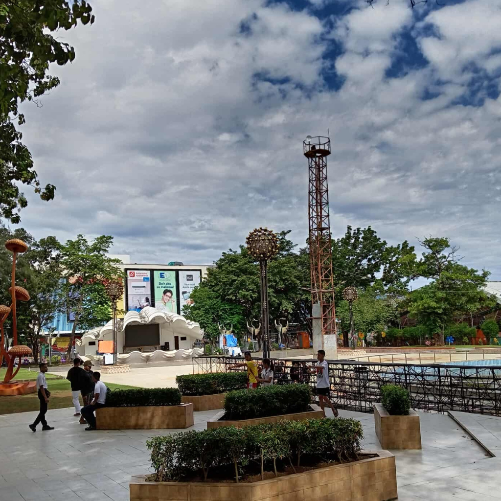

Culture & Lifestyle
Community & Traditions
Pagadian is home to a diverse population with Christian, Muslim, and indigenous communities. Traditions are often family-centered and community celebrations emphasize music, dance, and shared meals.
Culinary Highlights
Seafood is central to local cuisine. Try grilled fish, kinilaw (a ceviche-style dish), and other coastal specialties. Local desserts and tropical fruits are also popular.
Arts & Crafts
Handicrafts and traditional items can be found in markets and sometimes showcased during festivals and community events.